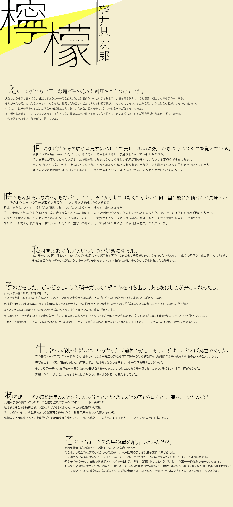

用語解説
・肺尖カタル ＝肺結核。当時は不治の病とされていた。
・びいどろ ＝ガラス工芸品。おはじきのようなもの。
・南京玉 ＝ビーズのこと。
・オードコロン ＝幅広い用途で用いられる香水。現代ではオーデコロンと呼ぶ。
・オードキニン ＝ヘアトニック。
・ロココ ＝18世紀頃に流行した美術様式の1つ。
・棒鱈(ぼうだら) ＝マダラという魚の干物。
・快速調 ＝テンポの速い曲調のこと。
・ゴルゴン ＝ギリシア神話に登場するメデューサのような怪物。目を見ると石化してしまう。
・ヴォリウム ＝ボリュームのこと。
・慈姑(くわい) ＝芋の一種。
・眼深(まぶか) ＝帽子等を目が隠れるほど深くかぶること。
・驟雨(しゅうう) ＝にわか雨のこと。
・絢爛(けんらん) ＝非常に贅沢で美しいさま。
・レモンエロウ ＝レモンイエローのこと。
・紡錘(ぼうすい) ＝糸を紡ぐための道具。両先端が尖っていて中央がぷっくりしている。
・一顆(いっか) ＝一粒という意味。
・売柑者之言 ＝明の時代の漢文の名前。
・諧謔心(かいぎゃくしん) ＝笑いを誘うようなユーモアある心情
・活動写真 ＝映画の古い呼び方。
その他の作品
青空文庫では、著作権が切れた色々な作品を無料で読むことができます。